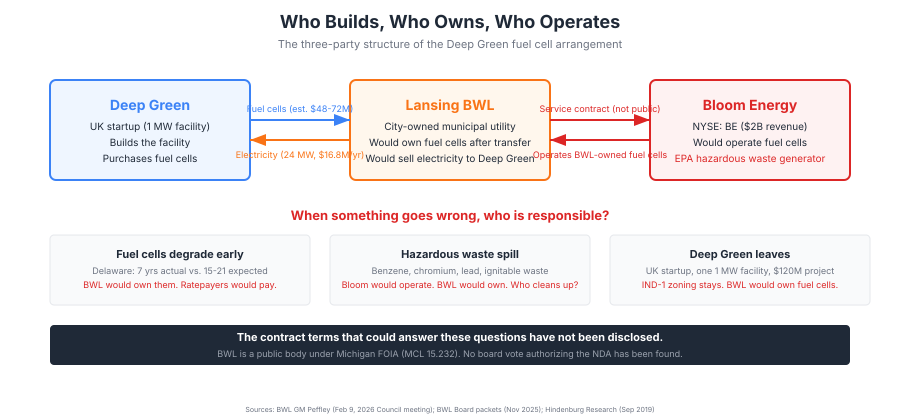
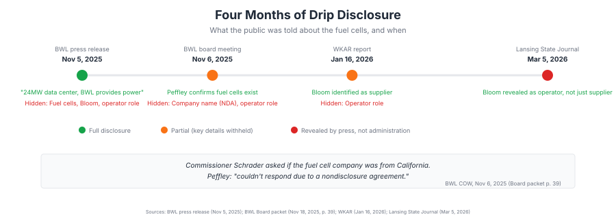
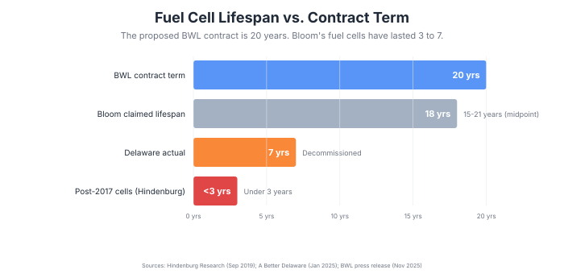
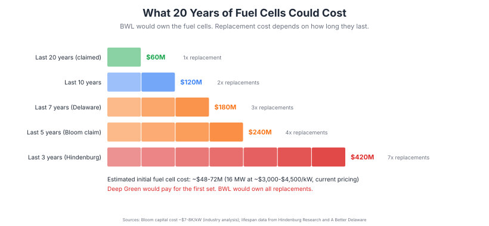

Lansing: Public Utility, Private Contract: The Deep Green Fuel Cell Deal
"They're paying for a 16 megawatt fuel cell plant, cash up front, and it will be our plant to own and operate."
BWL General Manager Dick Peffley, Lansing City Council meeting, February 9, 2026
LANSING, Mich. -- On February 9, BWL General Manager Dick Peffley told the City Council that BWL would own and operate the fuel cells at the proposed Deep Green data center. On March 5, the Lansing State Journal reported that a private firm had surfaced as the fuel cell operator. That firm was Bloom Energy, a company with $580 million in Delaware subsidies, a $1.37 million EPA fine, and fuel cells that lasted seven years instead of the expected fifteen to twenty-one. The administration did not disclose Bloom's operating role. The press found it.
The fuel cells are a major component of the project cost. Bloom Energy's capital cost has ranged from $7,000 to $8,000 per kilowatt at launch (2010, per Lux Research via CBS News) to an estimated $3,000 to $4,500 per kilowatt in recent years (per Hindenburg Research's analysis of Bloom's filings). At current pricing, 16 megawatts of solid oxide fuel cells would cost an estimated $48 million to $72 million. Deep Green has announced the entire project as a "$120 million investment." What Deep Green actually paid Bloom for the fuel cells is not public because the contract is under NDA.
Under the proposed arrangement, Deep Green would purchase the fuel cells and transfer ownership to BWL. BWL would then contract with Bloom to run them. According to Peffley, the terms of the arrangement are under a nondisclosure agreement (BWL Board packet, Nov 18, 2025, p. 39). The power purchase agreement, the Bloom service contract, and the fuel cell transfer terms have not been disclosed to the public. BWL is a public body under Michigan FOIA.
The Three-Party Chain
The proposed arrangement would split the data center's power plant across three entities. None of them would control the full picture.

| Component | Built/Purchased By | Owned By | Operated By |
|---|---|---|---|
| Data center building | Deep Green | Deep Green | Deep Green |
| Fuel cell plant (16 MW) | Deep Green (purchased) | BWL (transferred) | Bloom Energy (contracted) |
| Grid connection (8 MW) | BWL | BWL | BWL |
| Cooling system (glycol) | Deep Green | Deep Green | Deep Green |
| Backup generators | Deep Green | Deep Green | Deep Green |
If fuel cells underperform, Deep Green has no operational expertise. BWL would own the equipment but would not operate it. Bloom would operate but would not own. The contracts that would define who bears the cost of performance shortfalls, equipment degradation, and environmental incidents have not been disclosed to the council or the public.
Four Months of Drip Disclosure
The fuel cell arrangement was not presented to the public as a complete picture. It came out in pieces over four months, with each disclosure forced by public pressure or outside reporting rather than voluntary transparency.

At the November 6, 2025 BWL Committee of the Whole, Commissioner Dale Schrader asked whether the fuel cell company was from California. Peffley said he "couldn't respond due to a nondisclosure agreement" (BWL Board packet, Nov 18, 2025, p. 39). The company was Bloom Energy, headquartered in San Jose, California. Schrader's question was correct. The NDA prevented the answer. Peffley did not disclose who the NDA was with, whether it was with Deep Green, Bloom, or another party, or whether the BWL Board had authorized him to sign it.
Can a Public Utility Sign an NDA?
BWL is a charter department of the City of Lansing. It is a public body under Michigan FOIA (MCL 15.232). The statute's baseline (MCL 15.231(2)): "all persons...are entitled to full and complete information regarding the affairs of government and the official acts of those who represent them."
An NDA between a public body and a private company cannot create a new exemption to FOIA. A public body may only withhold records under one of the 27 statutory exemptions in MCL 15.243. The most likely claimed exemption is MCL 15.243(1)(f), covering trade secrets voluntarily provided to a public body. That exemption has three requirements that do not fit this contract:
- "Voluntarily provided." The exemption covers information "voluntarily provided to an agency." A negotiated bilateral contract is jointly created, not voluntarily submitted by one party.
- "For use in developing governmental policy." A 20-year power purchase agreement is a commercial transaction, not a policy development exercise.
- The governmental contract carve-out. The statute explicitly states: "This subdivision does not apply to information submitted as required by law or as a condition of receiving a governmental contract, license, or other benefit." A power purchase agreement with a municipal utility is a governmental contract.
Standard electricity rates do not qualify as trade secrets under the Michigan Uniform Trade Secrets Act (MCL 445.1902(d)). A trade secret must derive economic value from not being generally known. Peffley publicly stated BWL would charge "standard commercial rates."
No evidence that BWL's Board of Commissioners voted to authorize the NDA has been found in any board packet or minutes. MCL 15.243(1)(f)(ii) requires that a promise of confidentiality be "authorized by the chief administrative officer of the public body." The November 18, 2025 resolution that would have formally delegated contract authority to Peffley was pulled from the agenda after the League of Women Voters of the Lansing Area organized 16 or more opposition letters. The resolution never returned to the board. Peffley appears to have signed the NDA without a board vote.
In February 2026, Citizens Against Fossil Energy sued to unseal BWL's confidential contract with Ultium Cells (a GM battery plant in Delta Township), a separate but structurally similar NDA. The case was dismissed the same day by Judge Wanda M. Stokes in Ingham County Circuit Court with no written opinion. A same-day dismissal at the circuit level carries no precedential weight. No Michigan appellate court has ruled on whether a municipal utility can shield a commercial power purchase agreement from FOIA via NDA.
The Open Meetings Act (MCL 15.268) permits closed sessions only for real property negotiations, collective bargaining, and litigation strategy. Commercial contract negotiations are not a listed purpose. If BWL board members discussed Deep Green contract terms in closed session, that may be an OMA violation.
What the NDA Means for the April 6 Vote
The City Council is scheduled to vote on the land sale March 23 and the conditional rezoning April 6. Approving both would allow the project to move forward. The NDA means the council would be advancing a project whose core operational and financial terms are not available for review. The following have not been disclosed, according to Peffley, because of a nondisclosure agreement he signed without documented board authorization:
- The power purchase agreement between BWL and Deep Green
- The Bloom service contract that would define who operates the fuel cells and under what performance guarantees
- The fuel cell transfer terms that would determine what BWL takes ownership of and who pays for replacements
- The hazardous waste handling provisions
The public hearing process assumes the decision-makers have access to the information they need. In this case, the contracts that define how the fuel cells are built, owned, operated, maintained, and eventually decommissioned have not been shown to the body being asked to approve the project.
How Long Do the Fuel Cells Last?

Bloom has stated fuel cell lifespan exceeds five years. Hindenburg Research documented post-2017 cells lasting under three. In Delaware, 18 MW of fuel cells were decommissioned after approximately seven years of operation against an expected lifespan of 15 to 21 years. Bloom subsequently corrected 18 months of its own financial reports after acknowledging errors in how it accounted for service contracts. Hindenburg alleged $2.2 billion in undisclosed servicing liabilities.
The proposed BWL contract is 20 years. No Bloom fuel cell installation has been publicly documented as lasting that long.
What Replacement Could Cost

Under the proposed structure, Deep Green would pay for the first set of fuel cells. BWL would own them after transfer. If the cells degrade and need replacement during the 20-year contract, the replacement cost would fall on the equipment owner. That would be BWL, funded by Lansing ratepayers.
The Bloom service contract, which would define performance guarantees, replacement triggers, and cost allocation, has not been disclosed.
Hazardous Waste in Downtown Lansing
Bloom Energy is an EPA-designated "Large Quantity Generator" of hazardous waste, meaning the facility produces 2,200 or more pounds of hazardous waste per month. The waste codes documented in Hindenburg Research's September 2019 report include D018 (Benzene, a known human carcinogen that causes leukemia), D007 (Chromium), D008 (Lead), and D001 (Ignitable waste). The benzene is generated by desulfurization of natural gas in the fuel cells and accumulates over 18 to 24 months of operation. The EPA assessed a $1.37 million fine against Bloom in 2020 for failing to properly complete hazardous waste shipment manifests. Waste contractor Unicat sued Bloom in 2016, alleging that Bloom had represented the canister contents as non-hazardous when they in fact contained benzene, and that Bloom used Unicat's discovery of the contamination as leverage to negotiate lower pricing rather than addressing the hazard. Bloom ships hazardous waste from Delaware to Indiana for disposal.
The proposed Deep Green site is a 2.7-acre downtown parcel on the north side of E. Kalamazoo Street between S. Cedar and S. Larch, adjacent to residential buildings and the Grand River. Impressions 5, a children's science museum, is one block away. No public discussion of Bloom's hazardous waste record has appeared in any City Council hearing record reviewed for this analysis.
What Happens When Deep Green Leaves
The conditional rezoning (Z-3-2026) states that its conditions "run with the land and be binding upon all future owners thereof." If approved, the IND-1 Industrial classification would be permanent. If Deep Green later closes or leaves Lansing, the next owner would inherit industrial zoning on 2.7 acres of what was downtown core land. BWL would still own the fuel cells. Any environmental contamination from fuel cell operations would require remediation. The parcels were government-exempt parking lots before the city agreed to sell them.
Questions for the Council
The Lansing City Council holds a public hearing on the land sale (Act 7-2025) on March 23, 2026, and a public hearing on the conditional rezoning (Z-3-2026) on April 6, 2026 (WKAR, March 10, 2026). Before those votes:
- Has the City Council reviewed the Bloom service contract? Has the BWL Board?
- Has the BWL Board voted to authorize the NDA that Peffley cited at the November 6, 2025 board meeting? What legal basis does BWL have for withholding the contract terms from the public?
- What performance guarantees does BWL have if Bloom's fuel cells degrade faster than projected? Who pays for replacements?
- Has the Michigan Department of Environment, Great Lakes, and Energy (EGLE) been notified that an EPA-designated Large Quantity Generator of hazardous waste would operate in downtown Lansing?
- What is the environmental remediation plan if the facility closes before the 20-year contract expires?
- Has the city assessed its liability exposure from BWL owning fuel cells operated by a company that has been fined by the EPA, sued by its own waste contractor, and whose fuel cells were decommissioned early in Delaware?
- Could a council member file a FOIA request for the BWL-Deep Green contract and the Bloom service contract before voting? If the NDA was signed without board authorization and does not meet the requirements of MCL 15.243(1)(f), BWL may not have a legal basis to withhold the terms.
Written comments for either hearing can be submitted to city.clerk@lansingmi.gov before 5 PM on the day of the hearing.
Methodology
The three-party ownership structure is documented in BWL GM Peffley's testimony at the February 9, 2026 City Council meeting (auto-generated YouTube captions). Bloom's operator role was reported by the Lansing State Journal on March 5, 2026 ("Private firm surfaces as fuel cell operator for proposed Lansing data center"). The disclosure timeline is reconstructed from the BWL press release (Nov 5, 2025), BWL Board packets (Nov 18, 2025, p. 39, documenting the Schrader/Peffley NDA exchange), WKAR reporting (Jan 16, 2026), and the LSJ (Mar 5, 2026). Bloom Energy's hazardous waste record, fuel cell lifespan data, and financial restatements are from Hindenburg Research (Sep 2019) and A Better Delaware (Jan 2025). Fuel cell capital cost range ($3,000-$8,000/kW) from CBS News/Lux Research (2010) and Hindenburg Research analysis of Bloom SEC filings. FOIA analysis applies MCL 15.243(1)(f) and MCL 445.1902(d). CAFE v. BWL dismissal reported by City Pulse (Feb 4, 2026). The conditional rezoning conditions are from the Z-3-2026 public hearing notice (City Clerk, City of Lansing).